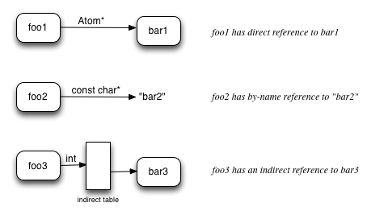

The Darwin linker is a new generation of linker. It is not "section" based like traditional linkers which mostly just interlace sections from multiple object files into the output file. The Darwin linker is based on "Atoms". Traditional section based linking work well for simple linking, but their model makes advanced linking features difficult to implement. Features like dead code stripping, reordering functions for locality, and C++ coalescing require the linker to work at a finer grain.
An atom is an indivisible chunk of code or data. An atom has a set of attributes, such as: name, scope, content-type, alignment, etc. An atom also has a list of Fixups. A Fixup contains: a kind, an optional offset, an optional addend, and an optional target atom.
The Atom model allows the linker to use standard graph theory models for linking data structures. Each atom is a node, and each Fixup is an edge. The feature of dead code stripping is implemented by following edges to mark all live atoms, and then delete the non-live atoms.
An atom is an indivisible chuck of code or data. Typically each user written function or global variable is an atom. In addition, the compiler may emit other atoms, such as for literal c-strings or floating point constants, or for runtime data structures like dwarf unwind info or pointers to initializers.
A simple "hello world" object file would be modeled like this:

There are two atoms: main and an anonymous atom containing the c-string literal "hello world". The Atom "main" has two fixups. One is the call site for the call to printf, and the other is a fixup for the instruction that loads the address of the c-string literal.
The linker views the input files as basically containers of Atoms and Fixups, and just a few attributes of their own. The linker works with three kinds of files: object files, static libraries, and dynamic libraries. Each kind of file has reader object which presents the file in the model expected by the linker.
Through the use of abstract Atoms, the core of linking is architecture independent and file format independent. All command line parsing is factored out into a separate "options" abstraction which enables the linker to be driven with different command line sets.
The overall steps in linking are:
The Resolving and Passes steps are done purely on the master graph of atoms, so they have no notion of file formats such as mach-o or ELF.
The resolving step takes all the atoms graphs from each object file and combines them into one master object graph. Unfortunately, it is not as simple as appending the atom list from each file into one big list. There are many cases where atoms need to be coalesced. That is, two or more atoms need to be coalesced into one atom. This is necessary to support: C language "tentative definitions", C++ weak symbols for templates and inlines defined in headers, and for merging copies of constants like c-strings and floating point constants.
The linker support coalescing by-name and by-content. By-name is used for tentative definitions and weak symbols. By-content is used for constant data that can be merged.
When one atom has a reference (FixUp) to another atom, there is also a binding type: by-name, direct, or indirect. A Fixup contains a tagged union that if the binding type is by-name, the union field is a pointer to a c-string. If the binding type is direct, the union is a pointer to an Atom. If the binding type is indirect, the union is a index into a table of pointers to Atoms. Below is a graphical representation of the binding types:
Input file Atoms contain only direct and by-name references. Direct references are used for atoms defined in the same object file for which the target atom is either unnamed or cannot change. For instance, calling a static function in a translation unit will result in a direct reference to the static functions's atom. Also the FDE (dwarf unwind info) for a function has a direct reference to its function. On the other hand references to global symbols (e.g. call to printf) use by-name binding in object files.
The resolving process maintains some global linking "state", including: a "symbol table" which is a map from c-string to Atom*, an indirect symbol table which is a growable array of Atom*, and for each kind of coalesable constants there is a content to Atom* map. With these data structures, the linker walks all atoms in all input files. For each atom, it checks if the atom should be in one symbol table or one of the coalescing tables. If so, it attempts to add the atom. If there already is a matching atom in that table, that means the current atom needs to be coalesced with the found atom.
To support coalescing, all references to coalesable atoms are changed to indirect binding and an entry is added to the indirect table which points to the current chosen atom. When all input atoms have been processed by the resolver, there should be only direct and indirect bindings left. If there are any NULL entries in the indirect table, that means there are undefined references. The linker then looks to the supplied libraries (both static and dynamic) to resolve those references.
Dead code stripping (if requested) is done at the end of resolving. The linker does a simple mark-and-sweep. It starts with "root" atoms (like "main" in a main executable) and follows each references and marks each Atom that it visits as "live". When done, all atoms not marked "live" are removed.
The Passes step is an open ended set of routines that each get a change to modify or enhance the master graph of atoms. Passes are only run if the master graph of atoms is completely resolved (no dangling edges). The current set of Passes in the Darwin linker are:
Some of these passes are specific to Apple's runtime environments. But many of the passes are applicable to any OS (such as generating branch island for out of range branch instructions).
The general structure of a pass is to walk the master graph inspecting each atom and doing something. For instance, the stub pass, walks the graph looking for atoms with call sites to proxy atoms (e.g. call to printf). It then instantiates a "stub" atom (PLT entry) and a "lazy pointer" atom for each proxy atom needed, and these new atoms are added to the master graph. Next all the noted call sites to proxy atoms are replaced with calls to the corresponding stub atom.
Once the passes are done, the output file generator is given a sorted list of atoms. Its job is to create the executable content file wrapper and place the content of the atoms into it.
The current use of sections in mach-o .o files over-constrains the linker. By default, the linker should preserve the section an atom is in. But since all sections must be contiguous in the output, that limits the ability of the linker to order atoms for locality. It would be helpful to enrich the object file with with reason something is in the section it is. For instance, is the section found at runtime? Or was the use of a section just a quick way to group some content together?
The ELF model for sections is a little better than mach-o because ELF sections have write and execute bits, whereas mach-o sections must be in some segment and the segment has the write and execute bits.
The messiest part of the linker is the mach-o parser. This is because mach-o is a traditional section and symbols based file format. The parser must infer atom boundaries using two approaches. The first is that some section types have well defined content which the linker can parse into atoms (e.g. __cstring, __eh_frame). The other approach is a naming convention (which the compiler follows) by which the linker breaks sections into atoms at any non-local (not starting with 'L') symbol. The processing the linker has to do parse mach-o .o files is a significant part of the link time.
Given that the assembler writes object files once, whereas the linker reads them many times (during development), it would make sense to optimize the object file format to be something the linker can read/parse efficiently.
LLVM has a nice model for its IR. There are three representations: the binary bit code file, the in-memory object model, and a textual representation. LLVM contains utility possible code for converting between these representations. The same model makes sense for atoms too. There should be three representations for atoms: binary file, in-memory, and textual. The Darwin linker already has an in-memory C++ object model for Atoms. All we need is a textual representation and binary file format.
Note: in the darwin linker the binary format for input object files is independent of the output executable format. That is, we could have one universal object file format which the linker could use as input to produce mach-o, ELF, or PE executables.
The object file binary format should be designed to instantiate into atoms as fast as possible. The obvious way to do that is that the file format would be an array of atoms. The linker just mmaps in the file and looks at the header to see how many atoms there and instantiate that many atoms with the atom attribute information coming from that array. The trick is designing this in a way that can be extended as the Atom mode evolves and new attributes are added.
In designing a textual format we want something easy for humans to read and easy for the linker to parse. Since an atom has lots of attributes most of which are usually just the default, we should define default values for every attribute so that those can be omitted from the text representation. One possile format is YAML. Here is the atoms for a simple hello world program expressed in YAML.
---
target-triple: x86_64-apple-darwin11
source:
atoms:
- name: _main
scope: linkage-unit
type: code
alignment:
power: 4
content: [ 55, 48, 89, e5, 48, 8d, 3d, 00, 00, 00, 00, 30, c0, e8, 00, 00,
00, 00, 31, c0, 5d, c3 ]
fixups:
- offset: 07
kind: pcrel32
target: 2
- offset: 0E
kind: call32
target: _fprintf
- type: c-string
merge: by-content
content: [ 73, 5A, 00 ]
...
One big use for the textual format will be writing test cases. The Darwin linker test suite test cases are written mostly in C/C++ and a few assembly files. The use of C means the same test case can be compiled for different architectures. But writing test cases in C is problematic because the compiler may vary its output over time for its own optimization reasons which my inadvertently disable or break the linker feature trying to be tested. By writing test cases in the linkers own textual format, we can exactly specify every attribute of every atom and thus target specific linker logic.
Around 2005 when Apple switched from using STABS to using DWARF for debug information, we made a design decision to have the linker ignore DWARF in .o files. This improves linking performance because the linker is not copying tons of debug info. Instead, the linker adds "debug notes" into output binary that contain the paths of the original .o files. During development the Darwin debugger will notice the debug notes and the load the dwarf debug information from the original object files. For release builds, a tool named dsymutil is run on the program. It finds the debug notes and then the original object files, then reads, merges and optimizes all the dwarf debug information into one .dSYM file which can be loaded by the debugger if needed.
The current way DWARF is generated is that all debug information for all functions in a translation unit are merged and optimized into sections based on debug info kind. For instance the mapping of instructions to source line numbers for all functions is compressed and put in one section. This does not play well in an Atom based file format. One idea is to have the compiler emit some intermediate representation debug information (one which is partitioned per atom) into the Atom based file format. The linker could then have code to convert that intermediate debug into to final dwarf. This is still an open question.
The current set of attributes defined for Atoms in the darwin linker were chosen to meet the requirements of developing code to run on iOS and Mac OS X. Below is a list of the attributes and their possible values. It may just require adding more values to support ELF and XCOFF. Or there may need to be new attributes added to capture new functionality.
Where does dllexport fit in here? Where does visibility protected and internal fit? Protected seems like scope=global plus the rule to not indirect references to it. Internal is like hidden plus enables some compiler optimizations. I'm not sure the linker needs to know about internal.